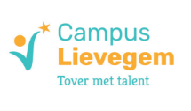

Het schrijfatelier wordt geladen …

Schrijf hier je eigen boek: hoofdstukken, scènes, personages, je verhaalplan en je doelen. Alles wordt automatisch bewaard bij je schoolaccount.
Vul in wat je nu al weet. Alles kan je later nog veranderen.
Hier zie je de boeken van alle leerlingen. Open een boek om het te lezen en feedback te geven bij een scène. Je kan niets aan de tekst van een leerling veranderen. Wil je zelf het atelier uitproberen? Zet op de CSF-site de testleerling aan en open daarna het atelier opnieuw.
Laden …